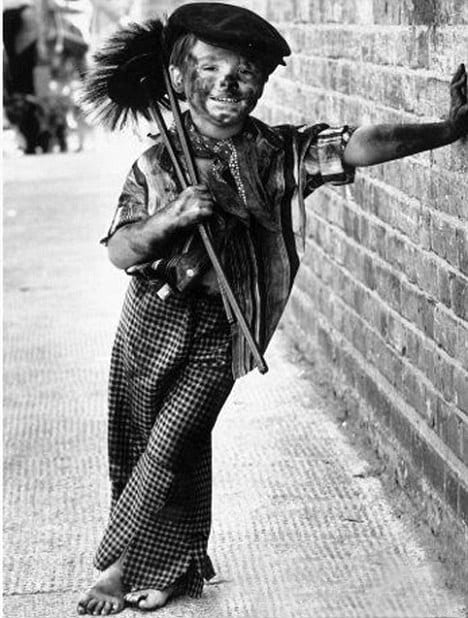

Poet: William Blake
A little black thing among the snow,
Crying! 'Weep! Weep!' in notes of woe!
'Where are thy father and mother? Say!' -
'They are both gone up to the church to pray.
Because I was happy upon the heath,
And smiled among the winter's snow,
They clothed me in the clothes of death,
And taught me to sing the notes of woe.
'And because I am happy and dance and sing,
They think they have done me no injury,
And are gone to praise the God and His priest and King.